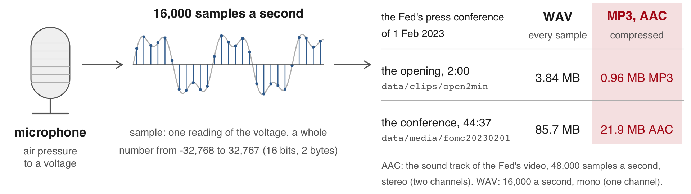
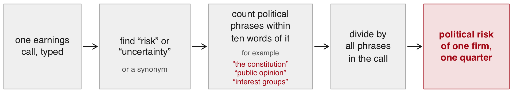
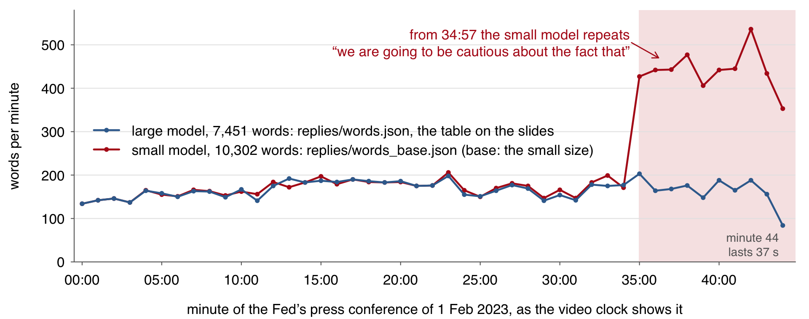
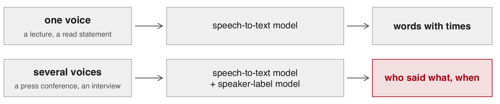
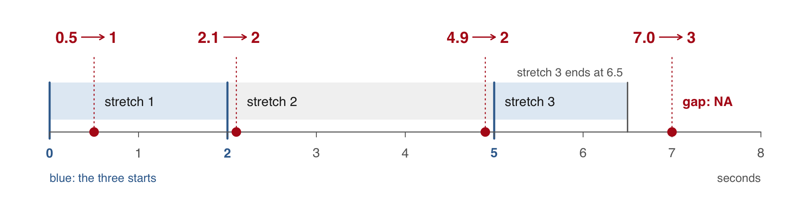
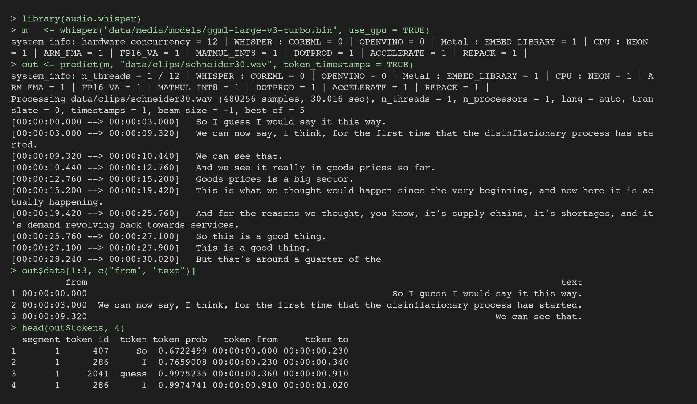
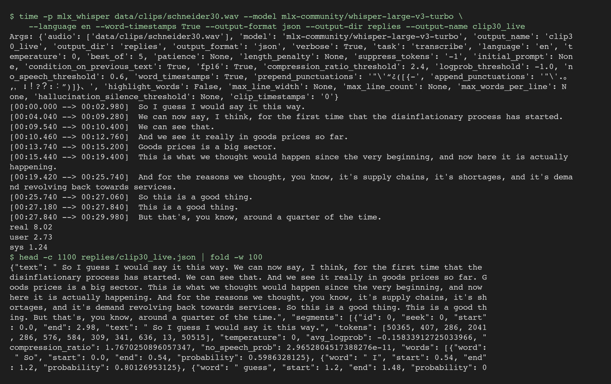
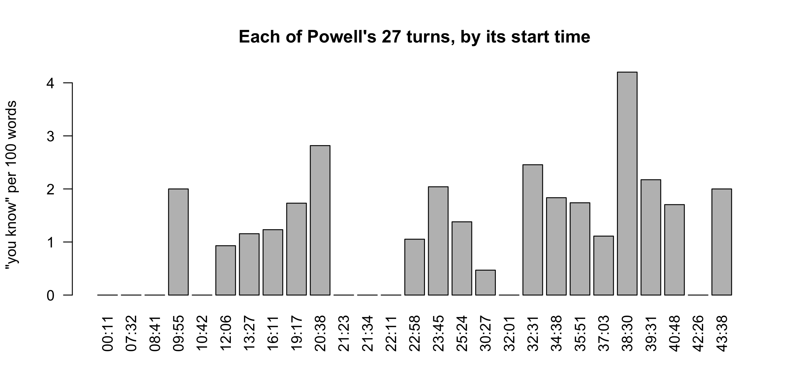
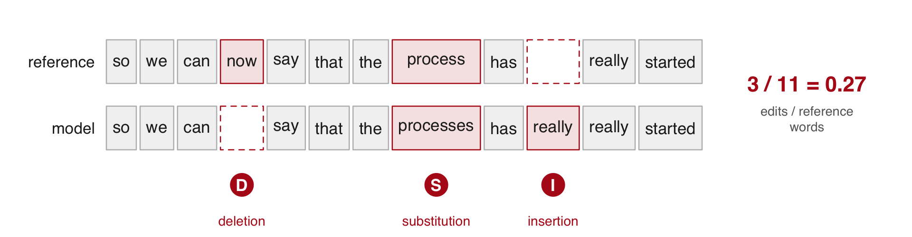

Who said what, and when, in the Federal Reserve’s press conference of 1 February 2023, and how far can the table built from it be trusted? A speech-to-text model writes every word of the 44-minute recording with its time. A second model marks which voice is talking when. R joins the two into one row per turn, and the times give the pause before each answer, the speaking rate and how often the chair says “you know”. The Fed’s own transcript is the reference throughout: the turn counts are set against its speaker tags, and the words of a 30-second passage against its text.
The project. Download 19-audio.zip, unzip it, and open 19-audio.Rproj, so that R starts in the project folder. The scripts load the one package they use, jsonlite, and install it if it is missing. Nobody needs Python, an account or the network: every model reply is saved in the folder, and the R code reads only those files. Its README.md says what is where:
19-audio/ data/ the Fed's transcript PDF and the clips cut from the recording; media/ holds the video, its sound and two model files (not in the zip) replies/ every model reply, exactly as returned, and the Fed's text code/ 1_words.R to 6_wer.R and align.R, in lecture order; run_everything.R data_clean/ what the scripts compute: words.rds, seg.rds, w.rds, utterances.csv logs/ run times, the models' own logs, what the scripts print tools/ SETUP.md and the Python scripts that made the replies
Objectives
By the end of this session you can:
Explain how a recording becomes data: a vector of samples, stored whole (WAV) or compressed (MP3), and turned into a spectrogram before a model writes any word.
Explain what a speech-to-text model returns (words, times, the model’s own rating of each word) and why it writes what a captioner would write.
Explain how speaker labels are made from the voice alone, and why their resolution is the window the method listens to.
Turn the two raw outputs into a table with one row per turn (speaker, start, end, text), rebuilt from the saved files in seconds.
Measure from the times: turns per speaker, the pause before each answer, speaking rate, how often a filler phrase is said.
Judge a transcript against a reference: turn counts against the official transcript, word-error rate on a 30-second passage, which words the errors fall on.
Decide where to run a model, on the laptop or through an API, from the recording’s terms, its length and the need to rerun.
Left out: pitch and energy measured, and emotion (the sound itself); running Python in class; translation and forced alignment.
Plan for today
What we are going to do today
Foundations of sound data Waves · samples · loudness, pitch, timbre · files · spectrogram
Recorded speech as research data Why transcribe · two studies
Speech models Kinds of model · spectrogram to words · the loop
Who said what, and when Replies · speaker labels · join by time · the clip in R
Word-error rate against the Fed’s transcript adist() · normalization · four runs
Today: what was said, by whom and when, from the words and their times. How it was said is a separate question, answered from the sound.
1 · Foundations of sound data
Sound is a wave
Sound is a wave of air pressure. A vibrating object, such as the vocal folds, pushes and pulls the air beside it. Each layer of air pushes the next, so the swings in pressure travel outward.
Frequency: vibrations a second, in hertz (Hz). Powell’s vocal folds vibrate about 145 times a second in “afternoon”.
Amplitude: how far the pressure swings from normal, heard as loudness. Each bit of air moves back and forth in place and passes the push on.
Wavelength = speed / frequency: 343 / 145 = 2.37 m in air at 20 °C. The dots are drawn at one instant; a microphone at one spot sees the bands go past, so it records pressure over time, which is what the next slide plots.
A vibrating object, such as the vocal folds, a guitar string or a speaker cone, pushes the air beside it on each swing forward and pulls it on each swing back. The air does not flow: each layer moves back and forth in place and pushes the next, so bands of slightly higher and lower pressure travel outward at the speed of sound, 343 metres a second in air at 20 °C. The frequency is how many times a second the object vibrates, and so how many bands pass a fixed point each second; the amplitude is how far the pressure swings from normal. The wavelength, the distance between two bands of high pressure, is the speed divided by the frequency: 2.4 m for Powell’s 145 Hz. A microphone at one spot feels the pressure rise and fall as the bands pass, and that is the record the rest of this part works with.
How sound travels through a medium
Sound needs something to carry the pushes: air, water, a wall. Its speed depends on what carries it, and nothing carries it in a vacuum.
Helium: sound travels about 3 times faster. The pitch stays, but the throat’s resonances rise, so the voice sounds thinner.
Water: about 4 times faster. Ears built for air hear it poorly and struggle to tell where it comes from.
Motion: a source coming toward you bunches the crests and sounds higher; going away, lower (the Doppler effect).
Speeds at 20 °C: air 343 m/s, helium 1,007, fresh water 1,481. Doppler for a source moving at v toward a still listener: f × c / (c − v); a 145 Hz hum on a car at 30 m/s is heard at 159 Hz ahead and 133 Hz behind.
The speed of sound depends on how stiff and how dense the medium is: about 343 m/s in air, 1,007 in helium and 1,481 in fresh water, all at 20 °C, and faster still in steel. In helium the vocal folds vibrate at about the same rate, so the pitch barely moves, but the resonances of the throat and mouth, which depend on the speed of sound, rise by nearly three times; the overtones they boost shift up and the voice sounds thin and cartoonish. Under water the ear, built to pick up pressure swings in air, works poorly, and since sound arrives at the two ears with a quarter of the delay it has in air, it is hard to tell where a sound comes from. A moving source sends each crest from a little further along, so the crests ahead are closer together and arrive more often: a higher frequency. Behind it they spread out: a lower one. A 145 Hz hum on a car at 30 m/s (108 km/h) is heard at 159 Hz as it comes and 133 Hz as it goes.
A recording is a vector of numbers
A recording is one long vector of numbers. Played back, they give the whole sound up to 8,000 Hz. Here: the first 2 minutes of the Fed’s press conference of 1 Feb 2023.
code/0_sound.R; installs tuneR if missing
library(tuneR)wav <-readWave("data/clips/open2min.wav")wav@samp.rate # samples a second#> [1] 16000length(wav@left) # samples in 2 minutes#> [1] 1920000i <-112800+1:800# 50 ms from 7.05 swav@left[i[1:6]] # the first six#> [1] 206 41 280 1 1 352plot((i -1) /16000, wav@left[i], type ="l",main ="\"Good\", 7.05 to 7.10 s",xlab ="seconds", ylab ="amplitude")
Sample: one measurement of the microphone’s voltage at one instant, stored as a whole number (not a statistical sample).
Sampling rate: measurements per second, in hertz (Hz, per second); 16,000 here.
Plotted: Powell’s “Good”. Two minutes hold 1,920,000 numbers; the 44:37 conference, about 42.8 million.
“Good afternoon” is the first thing Powell says. The model places “Good” from 6.62 s; the sound itself starts near 7.05 s.
The microphone turns air pressure into a voltage, and the recorder measures that voltage 16,000 times a second. readWave() returns a Wave object: @left holds the samples of its one channel (a stereo file has @right as well), @samp.rate the sampling rate and @bit the bits per sample, 16 here, so each sample is a whole number from −32,768 to 32,767. The 50 milliseconds plotted start where the sound of “Good”, the first word of the conference, begins. The speech-to-text model places the word from 6.62 s; from 6.62 to 7.05 s the recording holds only the room’s noise and a click.
The first two minutes of the conference, Powell’s opening statement (data/clips/open2min.mp3):
Loudness is amplitude
Amplitude is the size of the swings away from 0, heard as loudness. A louder sound swings further, both ways.
Chair Powell’s “afternoon”, 7.32 to 7.42 s of the Fed’s press conference of 1 Feb 2023, a stretch where his voice is steady.
Amplitude: the stored number itself, a position on a scale of whole numbers from −32,768 to 32,767 (16 bits). It has no physical unit.
Silence sits at 0. Powell’s “Good” reaches about 8,000, a quarter of the loudest the file can hold.
“Good” (7.05 to 7.46 s) runs from −6,082 to 8,005. It starts with an irregular creak (pulses about 14 ms apart), so the figures here use the steady “-ernoon”. A louder “afternoon” would have bigger swings at the same 145 cycles a second.
Amplitude is how far the samples swing from zero, which the ear hears as loudness; it says nothing about pitch. The recorder scales the microphone’s voltage to a 16-bit whole number, from −32,768 to 32,767, so a sample has no physical unit, only a position on that scale.
Pitch is frequency
Pitch is how many times a second the wave repeats, its frequency, in hertz. One cycle of “afternoon” lasts 6.9 ms, so its pitch is 145 Hz.
Chair Powell’s “afternoon”, 7.32 to 7.42 s of the Fed’s press conference of 1 Feb 2023: about 14 cycles.
The vocal folds open and close at that rate: 85 to 180 times a second for a man.
We hear about 20 to 20,000 Hz. Speech sits almost all below 8,000 Hz, the highest a file of 16,000 samples a second holds.
f0 measured on this stretch: the first spectrum peak within 10 dB of the strongest, 144.5 Hz, one cycle 6.92 ms.
Frequency is how many times a second the wave repeats, in hertz; the repeat rate of a voice is its pitch. Powell’s “afternoon” repeats every 6.9 milliseconds, 145 times a second. A man’s pitch usually runs from about 85 to 180 Hz, a woman’s higher. The ear hears from about 20 to 20,000 Hz, but speech carries almost all its information below 8,000 Hz, the highest frequency a file of 16,000 samples a second can hold.
Timbre is the mix of overtones
Timbre is the mix of overtones a voice carries above its pitch. It makes vowels differ and voices recognisable.
Chair Powell’s “afternoon”, 7.32 to 7.42 s, as the energy at each frequency (the spectrum), in decibels (dB, a log scale) above the quietest point shown. Its first peak, the pitch, sits at 145 Hz.
Overtone: a weaker wave sounding with the pitch, at a whole multiple of it: 290, 435, 580 Hz … over 145 Hz. The mouth boosts some, damps others.
Time, the length of sounds and pauses, is the fourth dimension. The rest of the session measures it.
The peaks line up at whole multiples of f0 up to 13 f0. The floor, 0 dB, is the quietest point between 0 and 2,000 Hz; the pitch peak stands about 69 dB above it.
The vocal folds do not produce a pure tone: each puff of air carries overtones at 2, 3, 4 and more times the pitch, the peaks in the figure. The throat, mouth and lips act as a filter that strengthens some overtones and weakens others; which are strong is the timbre, and it changes with the shape of the mouth, which is why an “a” and an “oo” sung at one pitch sound different, and why voices are recognisable. Time covers how long sounds and pauses last.
How sound is stored
A sound file stores those numbers, whole or compressed. The highest frequency it keeps is half its sampling rate.

WAV keeps every sample as a 16-bit integer. MP3 and AAC drop what the ear barely hears.
At 16 kHz the file keeps up to 8 kHz, enough for speech.
Run in the project folder, so paths are relative to it; not run in class: the Fed's video to the 16 kHz mono WAV
# Terminal (RStudio's works), needs ffmpeg. -vn: drop the video; -ac 1: mono; -ar 16000: 16,000 a secondffmpeg -i data/media/fomc20230201_270p.mp4 -vn -ac 1 -ar 16000 data/media/fomc20230201.wav# R console: the same with the av package, which carries its own ffmpegav::av_audio_convert("data/media/fomc20230201_270p.mp4", "data/media/fomc20230201.wav", channels = 1, sample_rate = 16000)
The Fed’s video carries its sound as AAC at 48,000 samples a second in stereo: six times the samples of the 16 kHz mono WAV, in a quarter of its size. Written out whole at that rate, the same 44:37 would fill 514 MB. The models read 16 kHz mono, so one ffmpeg line converts the sound before anything else: -vn drops the video, -ac 1 mixes the two channels into one, and -ar 16000 resamples to 16,000 a second. A sampled wave holds frequencies up to half its sampling rate: 8 kHz at 16 kHz, which keeps what tells words apart; a CD’s 44.1 kHz keeps up to 22 kHz, the top of human hearing. The clips ship as WAV, which the models read, and as MP3, which this page plays.
From samples to a picture of sound
A speech-to-text model first turns the vector into a spectrogram: the same sound, as energy by frequency over time. It measures the energy at each frequency in 25-ms windows, one every 10 ms.
Frequency: how many times a second the pressure swings, in Hz.
Window: 25 ms, 400 samples, measured as one.
Mel scale: frequencies spaced the way the ear hears them, pooled into 80 bands.
One second: 100 windows × 80 bands (128 in the large model).
Chair Powell’s “Good afternoon”, 6.62 to 7.46 s of the Fed’s press conference of 1 Feb 2023. Word times and the dashed boundary are the model’s. The shade is the energy at that frequency in that window, on a log scale. Darker is louder.
The dashed line is the model’s boundary between the two words. The spectrogram on the slide stops at 8 kHz, half the sampling rate.
The spectrogram is computed from the vector and nothing else. It keeps the energy at each frequency and drops the phase, the exact timing of each wave within a window, so the vector can be rebuilt from it only approximately; what tells words apart survives. The figure computes the spectrogram the way a model’s first step does, before the mel step: windows of 25 milliseconds (400 samples) every 10 milliseconds, each through a Fourier transform (fft() in R), which says how much of each frequency the window holds; the shaded band is one window. The models then pool the frequencies into bands on the mel scale, narrow at low frequencies and wide at high ones, since the ear tells low pitches apart more finely than high ones, and take the log of the energy: 80 bands for the small model, 128 for the large. A 30-second chunk, the piece the model reads at once, becomes 3,000 windows. The word boundaries drawn are the model’s: it places “Good” from 6.62 s, while the sound itself starts near 7.05 s.
2 · Recorded speech as research data
When a transcript is not enough
With a reliable transcript, a speech-to-text model adds nothing to the words. It is run in four cases.
No transcript: interviews, focus groups, hearings, radio, archives, most recordings.
A sanitized transcript: fillers, restarts and stutters edited out, as in the Fed’s.
No times: pauses and speaking rate need timestamps, which typed transcripts never carry.
How it was said: pitch, energy and tone, which no transcript holds.
Today works on the first three cases. The fourth needs the sound itself.
The Fed’s transcript of 1 Feb 2023 is the model’s reference in this session. Tone means something only once each stretch of sound is tied to its words and its speaker, which is what the timestamps and the speaker labels give. False starts go the same way as restarts in the Fed’s text.
Machine transcripts of political speech
Much political speech is recorded but never typed. Proksch, Wratil and Wäckerle turned it into text by speech recognition, then into each speaker’s position by a text model.
Wordfish: a text model. Speakers who use the same words more often land close together on its scale.
Word-error rate: wrong, missing and extra words per word of the true text.
Validation: the European Parliament’s 2011 State of the Union debate, 57 speakers, heard in English, French and German through the interpreters. Word-error rates: YouTube 0.03 English, 0.12 French, 0.10 German; Google’s API 0.21, 0.26, 0.21. Austrian TV debates 0.30, Council debates 0.06 (both YouTube). The Council publishes no verbatim record of its sessions.
Party conferences, some legislatures, television debates and talk shows are recorded but rarely transcribed, and paying people to type them is too expensive for most research. The authors first test speech recognition on the European Parliament’s 2011 State of the Union debate, which has human transcripts and was interpreted into English, French and German: YouTube’s automatic captions scored a word-error rate of 0.03 in English, 0.12 in French and 0.10 in German, Google’s speech API 0.21, 0.26 and 0.21. Speaker positions and sentiment scaled from the machine transcripts track those from the human ones. They then apply it to the 2017 Austrian election debates on television (candidates move toward their opponents’ positions) and to ministers’ speeches in the Council of the EU on the long-term budget, of which no verbatim record exists. Their R package wersim adds transcription errors at a chosen extra rate and estimates again, to show how far a result depends on transcript quality.
Police body-camera footage as data
Voigt et al. had the body-camera footage of 981 traffic stops in Oakland transcribed. Officers spoke less respectfully to Black drivers than to white drivers.
Voigt et al. (PNAS, 2017): the gap holds with the officer’s race, the offense, the place and the outcome of the stop held fixed.
The transcribers did both of this session’s jobs by hand: the words, and who spoke when.
682 Black and 299 white drivers, 68.1% of the 1,440 such stops that month. White drivers were 57% more likely to hear one of the most respectful utterances (top 10%), Black drivers 61% more likely to hear one of the least respectful (bottom 10%). Officer speech to the dispatcher or other officers was removed using the transcribers’ speaker labels.
The footage is 183 hours from 981 stops made by 245 officers of the Oakland Police Department in April 2014. Professional transcribers typed each stop while listening to the audio and watching the video, and labelled who was speaking at each point; the labels let the authors drop what officers said to the dispatcher or to each other. Seventy participants rated 414 officer utterances for respect without being told the driver’s race, and a model trained on those ratings scored all 36,738 officer utterances. White drivers were 57% more likely to hear one of the most respectful utterances, Black drivers 61% more likely to hear one of the least respectful. The paper treats the footage as data rather than as evidence kept for complaints.
Two studies of typed transcripts needed no speech model at all: the words already existed. They show what such data can answer once the words exist.
FOMC meeting transcripts as data on deliberation
In late 1993 FOMC members learned that their recorded meetings would be published. Newer members then discussed more topics, cited more data and moved toward the chair’s topics.
Natural experiment: a change the researcher did not make.
Topic model: groups of words that appear together (topics), with each speaker’s share of each.
Takeaway: what people say in a meeting, tagged by speaker, is data on behaviour.
The paper ran no speech model: a typed transcript exists for every FOMC meeting since March 1976. The chair was Alan Greenspan. “Toward the chair’s topics”: topic shares closer to the chair’s. More topics and more data reads as preparation (discipline); speaking like the chair reads as conformity. The paper’s influence measure says discipline dominates.
The paper needed no speech model: the Fed has typed a transcript of every FOMC meeting since March 1976. The change the authors use is the decision, in November 1993, to publish those transcripts after five years; members new to the committee changed how they spoke more than experienced ones. A topic model reads every member’s words and returns, for each speaker, the share of each topic, so “more like the chair” means topic shares closer to those of the chair, Alan Greenspan. The two effects have names in the paper. More topics and more data read as better preparation, which the authors call discipline; speaking more like the chair reads as conformity. Their measure of each member’s influence on the discussion says discipline dominates.
Political risk measured from earnings calls
The share of an earnings call spent on political phrases near a word for risk measures the firm’s political risk.

Earnings call: a listed firm’s managers answering analysts on its quarterly results.
Takeaway: a few minutes of typed talk per firm, over thousands of firms, is a firm-level variable.
The measure: the share of each call’s two-word phrases that come from political texts and sit within ten words of a word for risk or uncertainty. The phrases shown are from the paper’s own table of top political bigrams. Most of its variation lies between firms, not over time. A vendor types the calls.
The measure counts the two-word phrases (bigrams) of each call that come from political texts and sit within ten words of “risk”, “uncertainty” or a synonym, and divides by all the call’s bigrams. The sample is 178,173 calls of 7,357 US-listed firms from 2002 to 2016, with transcripts licensed from a vendor. The three phrases in the figure come from the paper’s own table of the most political bigrams.
Sautner, van Lent, Vilkov & Zhang (JF, 2023) measure firms’ exposure to climate change from the same kind of transcript: more than 10,000 firms in 34 countries, 2002 to 2020, with a method that discovers the climate keywords from the text itself.
Where recordings come from
A recording’s terms say whether a transcript exists, whether the audio may be copied and where it may go. Public domain: no copyright, anyone may copy. Licence: a contract on what you may do with a file.
Source
What exists
Terms
The Fed’s press conferences
video; a transcript the next day, its final version two weeks later
public domain
FOMC meetings
transcripts, out after five years
public domain
ECB press conferences
webcast and transcript on ecb.europa.eu
ECB copyright; free use with the ECB cited
Earnings calls
audio and transcripts of firms’ quarterly results calls, sold by a data vendor
a licence, which sets what may be copied or sent out
Your own interviews
nothing until you record it
consent from each person; approval by the IRB, the university board for research with people
The two studies before used typed transcripts, which carry no times; a recording gives each word’s time. The Fed’s website “is in the public domain”.
The Fed’s page for the conference holds the embedded video and the “Transcript” link. The preliminary transcript went up the day after the conference, with the video; the final version (the one in the project) came about two weeks later. The Fed’s wording continues: “Please cite to the Board as the source of the information.”
One more source, for comparison: oral arguments at the US Supreme Court, the highest US court. The audio of every argument is posted on supremecourt.gov the day it is heard (the online archive starts with the 2010 Term; recordings exist since 1955). The site states no reuse terms; a work of the US government carries no copyright (17 U.S.C. 105).
Both studies in this part took their transcripts from one vendor under licence. The vendor kept the audio of each call for about a year (Mayew & Venkatachalam (JF, 2012)).
The Fed press conference of 1 February 2023
This session analyzes one recording: what Chair Powell and the reporters said at the Fed’s press conference of 1 Feb 2023. It checks everything it builds against the Fed’s own transcript. A turn is one person’s talk until another speaks. The transcript tags 76.
After each meeting of the FOMC, the Fed’s rate-setting committee, Chair Powell reads a statement on camera. He then answers reporters for about 40 minutes. Michelle Smith, the moderator, calls each reporter by first name.
44 min 37 s, 23 pages, 19 speakers. Chair Jerome Powell has 30 turns; Michelle Smith of the Fed’s staff moderates and calls each reporter by first name (17 turns); 17 reporters have 29. The 25 basis points are on transcript page 1, the range on page 3. A basis point is a hundredth of a percentage point. Times are mm:ss on the video. Her exact title in February 2023 is not confirmed, hence “of the Fed’s staff”.
The FOMC meets eight times a year. That day it raised its interest rate by 0.25 percentage point (25 basis points; a basis point is a hundredth of a percentage point), to 4½ to 4¾ percent. The conference lasted 44 minutes 37 seconds; the transcript runs to 23 pages and names 19 speakers. Chair Jerome Powell has 30 turns. Michelle Smith of the Fed’s staff moderates: she calls each reporter by first name, 17 turns in all. The 17 reporters have 29 turns. The figure pairs a frame of the Fed’s video (Powell answering, at about 16:11) with page 1 of the transcript, which opens “CHAIR POWELL. Good afternoon, and welcome.”
3 · Speech models
Kinds of audio models
Each kind of model does a different job on a recording. Most read speech; the last reads every other sound. This session uses the first two.
Speech-to-text: turns the sound into words, with a start and end time for each.
For transcripts, word counts and speaking rates.
Speaker labels (diarization): find where the voice changes; label each voice.
For turns: who said each word.
Forced alignment: takes an existing transcript and finds when each word is said.
For timing a trusted text, such as the Fed’s.
Translation: writes speech in another language, directly or through a transcript.
For sources in a language you do not read. The transcript lets you check it.
Voice measures: track pitch and loudness over time, or score emotion.
For how something was said, beside what was said.
Chat models with audio: answer a question about a recording, in prose.
For a quick summary; its times and labels are rough.
Sound events: label sounds other than speech, such as cars, birdsong or a dog barking, with their times.
For counts of events: traffic, wildlife, noise.
A speaker-label model gives anonymous voices (SPK00, SPK01 …), not names. Forced alignment needs the words first; it only finds when each is said. A chat model’s times and labels are guesses to check by ear.
Speech-to-text and speaker labels are separate models run separately; this session joins their replies by time. Forced alignment starts from a text that already exists and finds when each of its words is spoken, which suits a recording with a trusted transcript, such as the Fed’s. Translation models write the words of one language in another. Voice measures read the sound itself: pitch, loudness, and the scores of models trained on acted emotions. Chat models that accept audio answer a question about a recording in prose; their times and speaker labels are rough and need checking by ear.
From the spectrogram to words
The speech-to-text model reads the spectrogram and writes like a language model: it predicts each word from those before.
One part reads the spectrogram; the other writes one word at a time, to fit the sound and the words already written.
Where the sound is hard to read, the words already written have more influence. Each repeat makes the next likelier, so a loop keeps going. Example below.
Small and large: one model in two sizes. The large has 11 times the parameters: slower, but better on unclear sound.
Example: Powell at 35:22, as each model wrote it (Python, before class; replies/words.json, words_base.json)
large but I think we, we're going to be cautious about declaring victory and, you know, sending signals that we think ...small but I think we we're going to be cautious about about declaring victory and you know that's not going to be a good example of the fact that we are going to be cautious about the fact that we are going to be cautious about the declaring victory and ... from 35:33 to the end: "we are going to be cautious about the fact that", repeated
The large one matches the Fed’s transcript.
The large model’s lines match what Powell said (the Fed’s transcript has “we’re going to be cautious about declaring victory”). The small model takes the real “we’re going to be cautious about”, drifts, and from 35:33 every segment it writes is “we are going to be cautious about the fact that” to the end of the recording: 4,414 words and 9.6 minutes of audio lost. No restarts either. On this recording the large model wrote “you know” 70 times and the Fed’s transcript keeps 75.
The model family was trained on 680,000 hours of audio from the web, each paired with the transcript found with it, after machine-made captions were filtered out (Radford et al. (ICML, 2023)). Human transcripts drop fillers and restarts, so the model learned to drop them too: the Fed’s 23-page transcript holds no “um” or “uh”, and the model wrote none. The part that reads the spectrogram (the encoder) turns each 30-second chunk into a summary of what sounds happened when; the part that writes (the decoder) is a language model that picks each next word from the words written so far and from that summary.
The small model’s loop
The small model repeats one phrase from 34:57 to the end. The large model does not. Both are sizes of one speech-to-text model, each run on the whole recording.

The model reads the recording in 30-second pieces, chunks, each started from the previous chunk’s text, so a loop passes on. Started fresh, the small model wrote 7,264 words and no loop.
The small model reads the sound less well, so continuing its own text wins over the sound more often. Any size can loop on a harder recording.
Large and small are two sizes of one model family. The fresh-start run is replies/words_base_nocond.json (condition on previous text switched off). The other usual guards: a check that flags text which compresses too well (a repeat compresses very well), and a retry with more randomness in the choice of words.
Both transcripts of 34:30 to 36:00, timed to the audio: at 35:28 the small model stamps 119 words on one instant, then repeats one phrase while Powell keeps talking.
34:30 to 36:00 of the recording; press play: each column lights the word its model wrote for that moment.
Large model
Small model
The model reads the recording 30 seconds at a time and, by default, gives the writer the text of the previous chunk as its starting context, which keeps names and spellings consistent across chunks. A repeat at the end of one chunk therefore becomes the likeliest start of the next, and the loop runs to the end of the file. The small model’s run with that context switched off (replies/words_base_nocond.json) has no loop. The usual guards are that switch, a check on how well the text compresses (a repeated phrase compresses very well), and a retry with more randomness in the choice of words. The same mechanism writes words nobody said during silence or music.
4 · Who said what, and when
What the models return, and the table we build
This part uses two different models: a speech-to-text model, which wrote every word with its time, and a speaker-label model, which marked which voice talks when. Both ran before class; this part joins their replies.
data_clean/utterances.csv, 3 of its 56 rows (times in seconds; text cut at 45 characters)
speaker start end text1 SPK00 11.10 417.73 colleagues and I understand the hardship that2 SPK02 425.29 450.75 Chris Rugeber, Associated Press. Thank you fo3 SPK00 452.63 490.93 So it is important that overall financial con
The question for the rest of the session: how far can this table be trusted?
An utterance is the speaker-label literature’s word for a turn; the file keeps it. Why row 1 starts at “colleagues” comes with the join.
The two replies, made in Python before class
Two Python scripts wrote replies/ before class, in about 6 minutes. They are not run in class. Everything after them runs in R.
code/python/1_words.py: the speech-to-text reply, replies/words.json (5 min)
import json, mlx_whisperreply = mlx_whisper.transcribe("data/media/fomc20230201.wav", path_or_hf_repo="mlx-community/whisper-large-v3-turbo", # the large model language="en", word_timestamps=True) # a time on every wordjson.dump(reply, open("replies/words.json", "w"))
code/python/2_speakers.py: the speaker labels, replies/speakers.rttm (35 s), in four steps
1. 30-ms frames marked speech or not; 3-s windows, one every 1.5 s, kept if at least half speech2. one voice embedding per window, from a model trained on thousands of voices3. the embeddings clustered: the windows of one cluster share a label4. each window labels its middle 1.5 s; neighbours with the same label merge into a stretch
Both scripts rebuilt the shipped files exactly on 3 Nov 2026 (the clip’s 104 words; speakers.rttm byte for byte). They need the Python environment of tools/SETUP.md and the full WAV, which is not in the zip.
What a speech-to-text model returns
The speech-to-text model returns one JSON file. It holds the whole text, then segments, each with its words and their start, end and probability.
replies/words.json, the Fed's press conference of 1 Feb 2023: its first segment, Chair Powell's
{"text":" Good afternoon and welcome. My colleagues and I ...","language":"en","segments":[{"id":0,"start":6.62,"end":8.40,"text":" Good afternoon and welcome.","words":[{"word":" Good","start":6.62,"end":7.14,"probability":0.558},{"word":" afternoon","start":7.14,"end":7.46,"probability":0.996},{"word":" and","start":7.46,"end":8.14,"probability":0.681},{"word":" welcome.","start":8.14,"end":8.40,"probability":0.997}]},...1,710moresegments]}
JSON: a text format for nested lists. Segment: a phrase returned as one piece. Timestamp: seconds from the start of the recording.
Probability: the model’s own rating of the word it chose, so a confidently wrong word scores high.
Raw reply: the file as the model wrote it, never edited by hand. This one, from the large model, holds 1,711 segments and 7,451 words.
The slide leaves out the token list and three scores each segment carries: avg_logprob, the average log-probability of its tokens; compression_ratio, how much its text shrinks when compressed, high for text that repeats itself; and no_speech_prob, the model’s rating that the stretch holds no speech. The compression ratio comes back below.
Reading the speech-to-text reply in R
The speech-to-text reply is one JSON file: the whole text, then segments, each with its words and their start, end and probability. fromJSON() reads it; one line stacks the 1,711 segments’ words into 7,451 rows.
code/1_words.R, in the 19-audio folder (open 19-audio.Rproj first); the script installs jsonlite if it is missing
# stt$segments: one row per segment; its words column holds a small table per rowwords <-do.call(rbind, stt$segments$words) # stack the 1,711 per-segment word tableswords <- words[, c("word", "start", "end", "probability")]words$word <-trimws(words$word) # the model puts a space before each worddim(words)
#> [1] 7451 4
code/1_words.R; words from above
head(words, 4)
#> word start end probability
#> 1 Good 6.62 7.14 0.5576172
#> 2 afternoon 7.14 7.46 0.9960938
#> 3 and 7.46 8.14 0.6811523
#> 4 welcome. 8.14 8.40 0.9970703
stt, short for speech to text, holds the whole reply. words has one row per word. Probability is the model’s own rating of the word it chose.
The reply beside the Fed’s transcript
The speech-to-text model’s word count comes close to that of the Fed’s transcript of its press conference of 1 Feb 2023.
The model’s reply
The Fed’s transcript
Words
7,451
7,365
“you know”
70
75
The transcript’s count leaves out its page headers and its speaker tags (“CHAIR POWELL.”). “You know” is a filler phrase, counted per answer later in the session. Spelling differs: the model writes “2%” where the Fed writes “2 percent”.
The Fed’s count comes from the text layer of its PDF, saved as replies/fed_transcript.txt, once the lines that are not speech are dropped:
code/1_words.R, in the 19-audio folder; base R
fed <-readLines("replies/fed_transcript.txt", encoding ="UTF-8", warn =FALSE)fed <-sub("^\f", "", fed) # a form feed starts each pageheader <-"^(February 1, 2023|FINAL|Page [0-9]+ of 23|.*Press Conference)$"fed <- fed[fed !=""&!grepl(header, fed)] # blank lines, page headersfed <-sub("^[A-Z][A-Z-]+( [A-Z][A-Z-]+)+\\. ", "", fed) # speaker tags: "CHAIR POWELL. "fed_text <-paste(fed, collapse =" ")length(strsplit(trimws(fed_text), "\\s+")[[1]]) # the Fed's spoken words
#> [1] 7365
Counting the small model’s words per minute
Radford et al. (ICML, 2023) also name the failure in the words-per-minute figure of Part 3: a model that reads the text it has just written can fall into repeating it. Run again with each chunk decoded on its own (replies/words_base_nocond.json), the small model writes 7,264 words and no loop (Practice 1). The loop shows in a word count and in the segment’s own compression_ratio: a text that repeats itself compresses well.
R Console, in the 19-audio folder; needs jsonlite; words and stt from the slides before
small <-fromJSON("replies/words_base.json") # the small model, same settingssmall_words <-do.call(rbind, small$segments$words)per_min <-rbind(large =table(floor(words$start /60)), # words per minute of the conferencesmall =table(floor(small_words$start /60)))per_min[, 34:45] # minutes 33 to 44
c(large =max(stt$segments$compression_ratio), small =max(small$segments$compression_ratio))
#> large small
#> 1.861818 17.393443
When a speaker-label model is needed
A recording with one voice (a lecture, a read statement, a podcast monologue) needs only the speech-to-text model. A second, speaker-label model is needed when the research question is who said it.

Who said it is the question in the Fed’s press conference of 1 Feb 2023. It is also the question in an earnings call, an interview or a committee meeting.
Speaker diarization: marking which voice is talking when, with one anonymous label per voice.
What a speaker-label model returns
The speaker-label model returns stretches with a start, a duration and a label such as SPK00, and no names.
code/2_speakers.R, in the 19-audio folder; replies/speakers.rttm is the speaker-label model's reply
RTTM: plain text, one line per stretch, ten columns; start in 4, duration 5, label 8.
86 stretches, 19 labels for the Fed’s press conference of 1 Feb 2023: as many as the people its transcript names. Made in 58 s on a laptop, with no account.
How speaker labels are made
The speaker-label model gives windows that sound alike one label. A voice shorter than a window gets no label of its own.
Window: a 3-second stretch of the recording, one every 1.5 s. A window under half speech gets no label.
Voice embedding: numbers that sit close for the same voice; clustering groups them. Labelled stretch: consecutive windows with the same label, merged.
At 15:23 the moderator’s half-second “Howard” sits in four seconds of quiet and is dropped. At 21:38 a reporter’s “Yes” inside Powell’s window takes his label.
Each kept window labels its middle 1.5 s. “Howard.” gets no label; “Yes.” became Powell’s.
Speaker labels across the conference
In the Fed’s press conference of 1 Feb 2023, SPK00 (Chair Powell) holds the long stretches. The moderator’s name call “Howard.” at 15:23 falls in a 4.5-s gap whose windows were dropped. SPK07, the reporter’s label, follows it. Windows overlap, so they are drawn on two rows.
Top: the 86 stretches, one row per label: SPK00 has 56 of them, 1,896 of the 2,415 labelled seconds; 262 s of the conference carry no label. Bottom: 915 to 935 s; the windows starting at 921.0, 922.5 and 924.0 s hold too little speech and are dropped.
The shipped labels come from tools/diarize_ecapa.py. An energy gate keeps a 3-second window only when more than half its 30-millisecond frames hold speech; 1,566 windows were kept. Each kept window becomes an embedding from a network trained on thousands of voices, the embeddings are clustered, each window labels its middle 1.5 s, and neighbours with the same label merge into one stretch. So a stretch’s edges fall on the 1.5-second grid, and nothing shorter than a window is heard as a voice of its own. A half-second word inside a window the other voice fills takes that voice’s label: a reporter’s “Yes.” at 21:38 became Powell’s. In the top panel one label holds the long stretches (56 of them, 1,896 of the 2,415 labelled seconds: Powell), the other 18 hold short ones, and 262 seconds of the conference carry no label. The bottom panel zooms on 915 to 935 s: the windows that start at 921.0, 922.5 and 924.0 s hold too little speech and are dropped, and “Howard.” falls between two stretches.
A finer method scores every frame for up to three local voices before it embeds and clusters, and resolves turns shorter than a second. Its weights sit behind an account on the model-hosting site: a click that accepts each model’s user conditions and a read token, with the code itself under an open licence. tools/SETUP.md lists the steps. Its file would be another RTTM, and the read.table() lines above read any RTTM file.
Joining by time with findInterval()
Joining by time: each word takes the label of the stretch holding its midpoint, or NA, R’s mark for a missing value.

R Console; base R; the figure's three stretches start at 0, 2 and 5 s
findInterval(c(0.5, 2.1, 4.9, 7.0), c(0, 2, 5)) # the last start at or before each time#> [1] 1 2 2 3
findInterval() gives, for each time, the last stretch that starts at or before it. A time past that stretch’s end, such as 7.0 after stretch 3 ends at 6.5, lies in a gap and gets NA.
A speaker label for every word
Each of the 7,451 words of the Fed’s press conference of 1 Feb 2023 takes the label of the stretch holding its midpoint. 267 words (3.6%) fall before the first stretch or in a gap and get none.
code/3_join_turns.R, in the 19-audio folder; needs words (the 7,451-word table) and seg (the 86 stretches)
mid <- (words$start + words$end) /2# a word goes with the stretch holding most of iti <-findInterval(mid, seg$start) # the last stretch that starts before the midpointi[i ==0] <-NA# before the first stretchi[!is.na(i) & mid > seg$end[i]] <-NA# past that stretch's end, in a gapwords$speaker <- seg$speaker[i]c(no_label =sum(is.na(words$speaker)), share =round(mean(is.na(words$speaker)), 3))#> no_label share #> 267.000 0.036words[words$start >923& words$start <926.5, ]#> word start end probability speaker#> 2442 Howard. 923.79 924.23 0.9584961 <NA>#> 2443 Howard 925.93 926.37 0.6479492 <NA>#> 2444 Schneider 926.37 926.63 0.6259766 SPK07
The stretches come from the speaker-label model. probability is the speech-to-text model’s own rating of each word. The rows from 923 to 926.5 s hold the moderator’s name call “Howard.” and the reporter’s own “Howard Schneider”. Neither “Howard” has a label.
Joining by time: attaching to each word the stretch whose start and end surround it. The first five words, “Good afternoon and welcome. My” (6.62 to 11.10 s), fall before the first stretch (11.25 s), which is why row 1 of the table begins at “colleagues”. “Howard.” at 923.79 s falls in a gap.
Joining by time attaches to each word the stretch whose start and end surround it. The midpoint decides for a word that straddles the edge of a stretch. The first five words of the conference, “Good afternoon and welcome. My” (6.62 to 11.10 s), fall before the first stretch, which starts at 11.25 s; that is why row 1 of the utterance table begins at “colleagues”. “Howard.”, the moderator’s name call at 923.79 s, falls in the gap between two stretches, as does the first “Howard” of the reporter’s own introduction.
Turns numbered with cumsum()
A turn starts wherever the label changes. A running total of those changes numbers the turns: 56 in all, 27 of them Chair Powell’s.
code/3_join_turns.R, in the 19-audio folder; needs words, the 7,451-word table with its speaker labels
w <- words[!is.na(words$speaker), ] # the 7,184 labelled wordsnew_turn <-c(TRUE, w$speaker[-1] != w$speaker[-nrow(w)]) # TRUE where the label changesw$turn <-cumsum(new_turn)max(w$turn)
#> [1] 56
turn_label <-tapply(w$speaker, w$turn, unique) # one label per turnsort(table(turn_label), decreasing =TRUE)[1:4]
powell <-names(sort(table(w$speaker), decreasing =TRUE))[1] # the label with the most wordspowell
#> [1] "SPK00"
cumsum() is a running total in which TRUE counts as 1. Labels A A B B B A give changes TRUE FALSE TRUE FALSE FALSE TRUE, so turns 1 1 2 2 2 3. tapply() splits a column by a grouping and applies a function to each piece. powell is SPK00, the label with the most words: Chair Powell’s.
Powell’s label is the one with the most words; the moderator’s turns are on the next slide. Of the 19 labels, one has 27 turns, one has 5, seven have 2 and ten have 1.
The turns of every label, and the three labels with the most words:
code/3_join_turns.R, in the 19-audio folder; w and turn_label from above
In the Fed’s press conference of 1 Feb 2023, the speaker labels give Chair Powell 27 turns against the transcript’s 30. The moderator gets 0 against 17. Each of her name calls is shorter than the labels’ 3-second window.
Speaker
Transcript
From labels
Why, and when to listen in the video
Powell
30
27
Two answers merged. At 21:38 a reporter’s 0.5-s “Yes.” inside a window Powell fills took his label. At 28:47 the 4.3-s follow-up “Can we get there with the 5%?” got none. “Go ahead.” at 09:48 was never written by the speech-to-text model.
Moderator
17
0
16 name calls written (“Howard.” at 15:23), all in gaps between labelled stretches. “Colby, and then Howard.” at 11:41 was never written: 6.6 s with no words.
Reporters
29
26 + 3 strays
Two pairs of reporters share a label. Three stray labels, each on one to four words, fall at 09:53, 40:48 and 44:31.
Michelle Smith, the moderator, calls each reporter by first name. Of her 16 written name calls, 13 last 0.6 s or less. The longest, “Let’s go to Brendan for the last question.” at 43:03, lasts 1.8 s.
Names come from the Fed’s transcript. Strays: SPK04, four words at 09:53 (“December? You know, we’re”); SPK17, “That’s” at 40:48; SPK01, “Thank” at 44:31. Shared labels: Siegel and Guida as SPK03, Rabinovitch and Robb as SPK14. The model spelled Rugaber “Rugeber”. Optional plays at 15:23 and 21:38 if time allows.
The utterance table with tapply()
One tapply() per column over the turn number collapses w, the 7,184 labelled words, into utt, the utterance table. It has 56 rows of speaker, start, end and text.
code/4_utterances.R, in the 19-audio folder; needs w, the labelled words with their turn numbers
utt <-data.frame(speaker =tapply(w$speaker, w$turn, unique),start =tapply(w$start, w$turn, min),end =tapply(w$end, w$turn, max),text =tapply(w$word, w$turn, paste, collapse =" ")) # a turn's words as one stringnrow(utt)
#> [1] 56
write.csv(utt, "data_clean/utterances.csv", row.names =FALSE)first <-head(utt, 5); first$text <-substr(first$text, 1, 45) # substr(): characters 1 to 45print(first, right =FALSE)
#> speaker start end text
#> 1 SPK00 11.10 417.73 colleagues and I understand the hardship that
#> 2 SPK02 425.29 450.75 Chris Rugeber, Associated Press. Thank you fo
#> 3 SPK00 452.63 490.93 So it is important that overall financial con
#> 4 SPK03 497.09 519.65 Hi, Chair Powell. Thank you for taking our qu
#> 5 SPK00 521.31 587.21 I would say it is a good thing that the disin
paste(collapse = " ") glues a turn’s words into one string. The pauses, rates and counts that follow read the saved CSV. Names come from the text. The label with the most words opens with “Good afternoon”: Chair Powell. “Chris Rugeber, Associated Press” introduces himself.
The moderator has no label to name. A named copy of the table takes one lookup vector; the reporters can be named the same way from their introductions:
code/4_utterances.R, in the 19-audio folder; utt from above
who <-c(SPK00 ="Powell", SPK02 ="Rugaber (AP)")utt$name <- who[utt$speaker] # NA for the labels not yet namedhead(utt[, c("speaker", "name", "start")], 3)
code/5_transcribe.R turns sound into words in R with the whisper package. On the 30-second clip, Powell’s answer at 16:09, the tiny model takes about 4 s.
code/5_transcribe.R, in the 19-audio folder; the first run downloads torch's library and the model (151 MB) once
want <-c("whisper")need <- want[!(want %in%installed.packages()[,"Package"])]if (length(need)) install.packages(need)rscript <-file.path(R.home("bin"), "Rscript") # torch's own library, once, in a separate Rif (system2(rscript, c("-e", shQuote("quit(status = !torch::torch_is_installed())"))) !=0)system2(rscript, c("-e", shQuote("torch::install_torch()")))library(whisper)options(whisper.consent =TRUE) # lets it download the model file onceout <-transcribe("data/clips/schneider30.wav", model ="tiny", language ="en")cat(strwrap(out$text, 80), sep ="\n")
What the last line printed on the instructor's laptop, 3 Nov 2026
So I guess I would say it this way. We can now say I think for the first timethat the disinflationary process has started. We can see that and we see itreally in goods prices so far. Good prices is a big sector. ...
Run sheet. Before class: run code/5_transcribe.R once, so the model is downloaded. In class: run it again; about 4 s. Students should run it once before class too: 151 MB each over the room’s Wi-Fi is slow. If it fails: the shipped replies in replies/ carry on the session.
Transcribe the 30-second clip yourself and set it beside the Fed’s text of the same passage. 5 minutes.
Run code/5_transcribe.R. It prints the model’s words, then the Fed’s.
Find three places where the two differ.
Set model <- "base" and run it again. Which differences remain?
Tiny writes “Good prices” for “Goods prices”, and “supply change” for “supply chains”. It adds “around a quarter of them” at the cut.
Both sizes drop Powell’s restarts (“We—this is”, “We—you know”) and write “to the very beginning” for “since the very beginning”.
Base fixes “Goods prices” but keeps “supply change”.
A faster R route, audio.whisper, compiles the models’ C++ version from source and uses the graphics chip: the large model on the same clip in about 2 s. Its R console after the rehearsal, on the instructor’s laptop (logs/live_run_r.txt). While it works, predict() prints each segment with its times. The last line, head(out$tokens, 4), was added for the note on tokens below.

The R route, set up once
audio.whisper runs the same open speech-to-text models inside R, through whisper.cpp, a C++ version of them. It is not on CRAN, so R compiles it from its source code once. The build calls cmake, a build tool, and on a Mac it needs the Xcode command line tools. On the instructor’s laptop the release compiled in 66 s. Metal, Apple’s interface to the graphics chip, is built in by default. use_gpu = TRUE in whisper() uses it; without it the model runs on the processor.
Terminal, once, as it worked on the instructor's laptop; cmake from pip (brew install cmake also works)
python3-m venv ~/cmake-env &&~/cmake-env/bin/pip install cmake # cmake in its own environmentexportPATH=~/cmake-env/bin:$PATHcurl-L-o audio.whisper_0.5.0.tar.gz \ https://github.com/bnosac/audio.whisper/archive/refs/tags/0.5.0.tar.gzMAKEFLAGS=-j10 R CMD INSTALL audio.whisper_0.5.0.tar.gz # 66 s; "Including METAL backend"
The same from R loads the package and compiles it only if it is missing; cmake must be on the PATH:
R Console, once; needs cmake and the compiler above; installs remotes if it is missing
want <-c("remotes")need <- want[!(want %in%installed.packages()[,"Package"])]if (length(need)) install.packages(need)if (!requireNamespace("audio.whisper", quietly =TRUE)) remotes::install_github("bnosac/audio.whisper", ref ="0.5.0") # compiles whisper.cpp, about a minutelibrary(audio.whisper)
Each model file is downloaded once from the model-hosting site. The large one, 1.6 GB, took 54 s here:
R Console, in the 19-audio folder; writes data/media/models/ggml-large-v3-turbo.bin
Four model files, timed on the instructor’s laptop on 2 November 2026. A clip time is predict() alone, with language = "en" and the model already loaded; loading adds 0.2 to 2 s. The word-error rate is on the 30-second clip against the Fed’s text, as in Part 6.
Model file
Size
Clip, graphics chip
Clip, processor
The 44:37 conference
Word-error rate
ggml-base.bin, this session’s small model
148 MB
1.1 s
1.2 s
34 s, graphics chip
0.067
ggml-small.bin
488 MB
1.1 s
4.1 s
3 min 48 s, processor
0.067
ggml-large-v3-turbo.bin, the large model
1,625 MB
2.3 s
13.2 s
2 min 5 s, graphics chip; 13 min 3 s, processor
0.038
ggml-large-v3.bin
3,095 MB
3.7 s
not run
not run
0.048
On the whole conference the large model looped once: it wrote one sentence eight times, from 32:34 to 32:39. The two smaller files ran it with no loop.
out$tokens holds one row per token, with its own times and probability. A token is a piece of a word: the clip’s 101 words come as 126 tokens (“Goods” is “Good” and “s”). A token that begins with a space begins a new word, so the words can be rebuilt from the tokens.
The R route gives no speaker labels. Its diarize option splits a stereo recording by channel, and the conference’s sound is mono. replies/speakers.rttm came from a second model, run in Python.
Other routes, more complex
Three routes beyond audio.whisper in R turn a recording into words with times, and who spoke. Each costs setup, money or the audio leaving the laptop. The first made the shipped replies, the files in replies/ this session reads.
Route
What you install
Where the audio goes
Cost
Time
What comes back
Python on the laptop
Python and a model file
stays on the laptop
free
clip 8.5 s; conference 5 min 7 s
word times, word-error rate 0.029 on the 30-s clip (edits per reference word); speaker labels from a second model
An API from R, a service your code sends the file to
httr2 and a key (a password your code sends)
the provider’s servers
a fee per minute
not run here
word times if asked; speaker labels from some services
A chat model through ellmer: upload, ask for a transcript
ellmer and a key
the provider’s servers
a fee by audio length
not run here
prose; rough times and speaker labels if asked
The API and chat rows were not run: this laptop holds no key for a service that takes audio. A chat model writes prose, so its times are guesses to check by ear. The Python command and its terminal capture are on the page under this slide; the capture is the demo’s second fallback.
The recording’s terms decide the two rows that send audio away: licensed or confidential audio may not go to a provider’s servers. A model file on the laptop gives the same words on every run. A chat model that accepts audio takes the file through ellmer’s $file_upload(), with a prompt that asks for a verbatim transcript.
The Python route
Every file in replies/ came from this route, on the instructor’s laptop on 2 November 2026; tools/SETUP.md has the model ids, settings, commands and run times. One terminal line transcribes the clip:
Terminal, in the 19-audio folder, with the Python environment of tools/SETUP.md active
mlx_whisper, a speech-to-text program, runs the large model and asks for English, word times and JSON, under a new name. Its 104 words match the shipped replies/clip30_turbo.json, which Part 6 scores. The whole conference takes 5 min 7 s. The terminal after a rehearsal, on the instructor’s laptop:

The API route in R
A request to a speech-to-text API is one upload: a multipart POST (a request that carries a file) with the audio and a few parameters. One of them asks for a time on every word; without it the reply holds segments only. The reply is JSON with the same word table the laptop run writes, and some services return speaker labels in the same call. The provider charges per minute of audio and decides when a model is retired, so the saved reply is the object a paper can be rebuilt from. The shape of the request, with no provider named:
Not run in class: the shape of a speech-to-text request; needs httr2, an account and a key in ~/.Renviron
library(httr2)resp <-request("https://api.example.com/v1/transcriptions") |># the provider's addressreq_headers(Authorization =paste("Bearer", Sys.getenv("STT_API_KEY"))) |>req_body_multipart(file = curl::form_file("data/clips/schneider30.wav"),model ="<model id>",word_timestamps ="true") |># its name varies by providerreq_perform()reply <-resp_body_json(resp) # the text, then the words with their start and end
The raw replies saved beside the table
Every model reply is kept exactly as returned, beside the code that reads it and a README that says how it was made. For each reply the README records the model and its settings, the date and time the file was written, the run time and the word count; for words.json: “the full conference, … a time on every word; 00:40, 307 s; 7,451 words.”
The rebuild is one line, source("code/run_everything.R"). It takes about a second and prints the same lines as logs/run_everything.log. A new transcription takes minutes, and it may not return the same words. Two of the files, replies/words.json and replies/speakers.rttm, came from Python; the commands that made them are in tools/SETUP.md. The R route writes a transcript of its own and no speaker labels. Nothing in replies/ is edited by hand, and a live run writes under a new name beside the shipped reply.
How the audio was fetched and cut (from tools/SETUP.md). The Fed’s page embeds a video player whose public configuration names the video file; the MP4 link it returns expires within minutes, so it is asked for afresh each time. One ffmpeg line turns the video’s sound into the 16 kHz mono WAV the model reads (ffmpeg -i video.mp4 -vn -ac 1 -ar 16000 out.wav), and two more cut the clips. data/media/ is not in the zip. The video and its sound (246 MB) are one click away on federalreserve.gov, and the two model files of the R route (1.8 GB) one line away in R.
5 · Pauses, speaking rate and “you know”
The pause before an answer
utt is the utterance table built in R a few slides back, from the two replies (code/4_utterances.R saved it). The pause before a turn is its start minus the previous row’s end.
code/6_pauses.R, in the 19-audio folder; reads data_clean/utterances.csv, which code/4_utterances.R wrote
utt <-read.csv("data_clean/utterances.csv")utt$words <-lengths(strsplit(utt$text, " ")) # words per turnpowell <-names(which.max(tapply(utt$words, utt$speaker, sum))) # the label with the most wordsclock <-function(s) sprintf("%02d:%02d", floor(s /60), floor(s %%60)) # seconds to mm:ss# x <- c(10, 20, 30); c(NA, x[-3]) gives NA 10 20: the previous row's valueutt$pause <- utt$start -c(NA, utt$end[-nrow(utt)]) # this start minus the previous endhead(utt[, c("speaker", "start", "end", "pause")], 6)
The pause before an answer: from the end of the question to the start of the answer. clock() turns seconds into mm:ss, the video’s clock. The first question starts 7.56 s after Chair Powell’s opening statement ends. The moderator’s name call “Chris Rugeber.”, with no speaker label, sits inside the gap.
So a gap in the table is not always silence. Powell’s first answer came 1.88 s after the question.
Speaking rate per turn
Words divided by a turn’s duration give its speaking rate. Chair Powell’s median turn runs at 3.0 words a second, the reporters’ at 3.2.
code/6_pauses.R; needs utt (the utterance table, one row per turn) and powell (SPK00, Chair Powell)
Speaking rate: words per second within a turn. ifelse() picks one of two values per row. tapply() takes each group’s median. Powell first reads a prepared opening statement, 960 words in 407 s, 2.36 a second, then answers questions. A turn that merges two answers (28:47) also spans the question between them, so it reads slower.
The rate uses each turn’s own start and end, so a label gap between turns does not enter it.
Counting “you know” in each answer
A filler phrase counted per turn separates read speech from spoken. In the speech-to-text model’s text, Chair Powell’s 960-word opening statement has none; his 26 answers have 63.
code/6_pauses.R; needs utt (one row per turn), powell (SPK00, Chair Powell) and clock() (seconds to mm:ss)
mine <- utt[utt$speaker == powell, ]hits <-gregexpr("\\byou know\\b", mine$text, ignore.case =TRUE) # every match in each turnmine$you_know <-lengths(regmatches(mine$text, hits)) # how many per turnc(opening = mine$you_know[1], answers =sum(mine$you_know[-1]),per_100_words =round(100*sum(mine$you_know[-1]) /sum(mine$words[-1]), 2))
barplot(100* mine$you_know / mine$words, names.arg =clock(mine$start), las =2,ylab ="\"you know\" per 100 words", main ="Each of Powell's 27 turns, by its start time")

A filler phrase is said while thinking and carries no content. gregexpr() finds every match, regmatches() pulls them out, lengths() counts them. \\b marks a word boundary. Over the conference the speech-to-text model wrote 70 and the Fed’s transcript keeps 75. “Um” and “uh” are not counted: the models leave them out, as their training transcripts do.
An edited transcript keeps some fillers and cuts others. Fillers drop out in any language the model is run from: it learned from human transcripts that omit them. A prompt written full of fillers brings a few back (Part 6, the prompted runs); the Python route takes a prompt, R’s whisper package has no prompt argument. So this session does not count “um”. The barplot is on the page.
Chair Powell’s read opening statement at 00:11 has no “you know”, and 18 of his 26 spoken answers have at least one: 4.2 per 100 words at 38:30 (5 in 119 words), 1.4 in the 652-word answer at 25:24. Each bar is one of his 27 turns, at its start on the video’s clock, drawn by the barplot() line of the counting code.
The count for every Powell turn:
code/6_pauses.R, in the 19-audio folder; mine and clock() from above
Find the pause before each of Chair Powell’s answers: how many, the median, the longest and its time on the video’s clock. 4 minutes, in the R Console. His first row, the opening statement, has no question before it.
What the slides have built
utt the utterance table, one row per turn; pause = its start minus the previous turn's end, in spowell SPK00, the label with the most words (Chair Powell)clock() turns seconds into mm:ss, the video's clock
Keep Powell’s rows of utt that have a pause; count them and take the median pause.
The longest, with which.max(): its pause, clock() of its start, substr() of its text.
Compare with your neighbours: the median pause, and the clock time of the longest with its first words.
code/6_pauses.R; utt, powell and clock() as built on the slides before
26 answers, a median pause of 1.76 s; the longest, 6.56 s at 22:58, after Jeanna Smialek’s question.
The longest pause, 22:50 to 23:00 of the conference (data/clips/pause_2258.mp3):
The five longest pauses, listened to
All five longest pauses before Chair Powell’s answers in utt, the utterance table, hold words with no speaker label. The longest real silence before an answer is 4.58 s, at 43:38.
At
Pause in utt
Silence between words
Words in the gap with no label
22:58
6.56
3.14
7: “on the committee. So, the committee, obviously,”
43:38
5.90
4.58
3: “summer? Look, it’s”
37:03
4.66
2.10
4: “outcome? I’m not particularly”
23:45
4.34
1.26
6: “between moves? I mean, I think”
38:30
3.06
2.18
3: “on the economy?”
The pause in utt runs from the question’s last labelled word to the answer’s first. Words the labels missed sit inside it, in 16 of his 26 answers. The silence is the largest gap between consecutive words there. A long pause is played back, and its words read, before it is reported.
Play pause_4338.mp3 from the page (43:30 to 43:44), the debt-ceiling question, the last of the conference, before “Look, it’s very hard to think about all the different possibilities”. At 22:58 the 3.14 s falls between “committee.” and “So,”. Reporters: Smialek at 22:58 and 23:45, Rabinovitch at 37:03, Horsley at 38:30, Pedersen at 43:38.
The longest real silence, 43:30 to 43:44 (data/clips/pause_4338.mp3): the debt-ceiling question, the last of the conference, and the start of the answer, “Look, it’s very hard to think about all the different possibilities”.
The pause before every Powell answer
For Chair Powell’s 26 answers, the silence between words is the number to report: median 1.07 s against the table’s 1.76 s. The table’s gaps hold words with no speaker label, which fell between labelled stretches.
Open circles come from data_clean/utterances.csv, the utterance table. Blue dots come from data_clean/words.rds, the 7,451-word table that code/1_words.R saves, with each word’s start and end.
Chair Powell’s 26 answers in the Fed’s press conference of 1 Feb 2023.
The silence comes from the word table. For each answer, take every word that starts at or after the end of the previous turn and before the answer starts, and find the longest gap in that sequence, counted from the previous turn’s end to the answer’s start. The comparison allows 0.005 s either way: the times are written to the hundredth, and a time read back from the CSV can differ from the JSON’s in the last binary digit (1425.61 against 1425.6099999999999).
code/6_pauses.R, in the 19-audio folder; utt, powell, clock() and words from the slides before
utt$prev_end <-c(NA, utt$end[-nrow(utt)]) # where the turn before endsanswers <- utt[utt$speaker == powell &!is.na(utt$pause), ]silence <-function(from, to) { # the longest gap from one time to another g <- words[words$start > from -0.005& words$start < to -0.005, ] # the words in betweenmax(c(g$start, to) -c(from, g$end))}answers$silence <-mapply(silence, answers$prev_end, answers$start)c(table =median(answers$pause), words =median(answers$silence))
#> word start end speaker
#> 3814 shared 1371.71 1371.97 <NA>
#> 3815 on 1371.97 1372.13 <NA>
#> 3816 the 1372.13 1372.23 <NA>
#> 3817 committee. 1372.23 1372.53 <NA>
#> 3818 So, 1375.67 1376.11 <NA>
#> 3819 the 1376.11 1376.55 <NA>
#> 3820 committee, 1376.55 1376.83 <NA>
#> 3821 obviously, 1377.47 1377.91 <NA>
#> 3822 did 1378.27 1378.51 SPK00
The nine words around 22:58: the question ends with “shared on the committee.” (no label; “shared” starts the instant the labelled part of the question ends), then 3.14 s of silence, then “So, the committee, obviously,” (no label), and Powell’s labelled answer starts with “did”. The slide counts only the words that start after the previous turn’s end: 16 answers hold such words, and each of the five longest gaps holds one word fewer than the rule above takes in (17 answers by that rule).
6 · Word-error rate against the Fed’s transcript
The Fed’s passage beside the model’s words
On a 30-second clip, the large speech-to-text model’s 104 words differ from the transcript’s 105 in three places. The transcript’s text is the reference transcript, the text treated as correct.
So I guess I would say it this way. We can now
say, I think, for the first time that the
disinflationary process has started. We can see
that. And we see it, really, in goods prices so
far. Goods prices is a big sector. We—this is
what we thought would happen since the very
beginning, and now here it is actually
happening, and for the reasons we thought.
We—you know, it's supply chains, it's
shortages, and it's demand revolving back
towards services. So this is a good thing. This
is a good thing. But that's, you know, around a
quarter of the
The Fed’s transcript, page 9: replies/clip30_fed.txt
So I guess I would say it this way. We can now
say, I think, for the first time that the
disinflationary process has started. We can see
that. And we see it really in goods prices so
far. Goods prices is a big sector. This is what
we thought would happen since the very
beginning, and now here it is actually
happening. And for the reasons we thought, you
know, it's supply chains, it's shortages, and
it's demand revolving back towards services. So
this is a good thing. This is a good thing. But
that's, you know, around a quarter of the
time.
What the large speech-to-text model wrote from the clip: replies/clip30_turbo.json
The clip: Chair Powell answering Howard Schneider of Reuters, 16:09.6 to 16:39.6 of the Fed’s press conference of 1 Feb 2023. It ends mid-sentence. Neither text holds an “um”. The transcript’s editors kept two restarts, “We—”, that the model dropped. The model guessed “time.” at the cut. Punctuation and capitals are not counted.
Play schneider30.mp3 from the session page. The clip stops before the transcript’s next words, “PCE price index”. The 23-page transcript holds no “um” or “uh”, and the model wrote none: the editors and the model make the same kind of edit.
The 30-second clip (data/clips/schneider30.mp3):
Word-error rate on an eleven-word example
Word-error rate is substitutions plus deletions plus insertions, divided by the reference’s word count. Three edits in eleven words give 0.27.

Substitution: a wrong word in place of the right one (“processes” for “process”). Deletion: a reference word the model left out (“now”). Insertion: a word the model added (the first “really”, after “has”).
Word-error rate: the three counts summed and divided by the reference’s length. A model that adds many words can score above 1.
Counting word edits with adist()
Word-error rate: the substitutions, deletions and insertions that turn the reference into the model’s text, over the reference’s word count. adist() counts them; one character per word makes it count words.
code/7_wer.R; base R only
word_edits <-function(ref, hyp) { vocab <-unique(c(ref, hyp)) # every distinct word r <-intToUtf8(match(ref, vocab) +1000) # one character per word, past the ordinary letters h <-intToUtf8(match(hyp, vocab) +1000)adist(r, h, counts =TRUE)}ref <-strsplit("so we can now say that the process has really started", " ")[[1]]hyp <-strsplit("so we can say that the processes has really really started", " ")[[1]]d <-word_edits(ref, hyp)attr(d, "counts")[1, 1, ]#> ins del sub #> 1 1 1sum(attr(d, "counts")) /length(ref)#> [1] 0.2727273attr(d, "trafos")#> [,1] #> [1,] "MMMDMMMSMIMM"
Edit distance: the fewest substitutions, deletions and insertions that turn one sequence into the other. ref is the reference, hyp the model’s text (its hypothesis). match() numbers each word, and intToUtf8() turns each number into one character. The path in "trafos" reads M match, S substitution, D deletion, I insertion.
Normalizing both texts before scoring
Both texts are written by the same rules before counting, and those rules decide the score.
code/7_wer.R, in the 19-audio folder; base R
to_words <-function(x) { x <-tolower(paste(x, collapse =" ")) x <-gsub("[-/—–]", " ", x) # dashes and slashes split words: "We—this" -> "we this" x <-gsub("[^a-z0-9' ]", "", x) # other punctuation dropped; the straight apostrophe staysstrsplit(trimws(x), " +")[[1]]}to_words("We—this is what we thought. We—you know, it's P.C.E.")
Normalization: writing both texts by the same rules before comparing them. The transcript PDF prints a curly apostrophe (’) where the speech-to-text models write a straight one ('). Left curly, the punctuation rule drops it, and “it’s” becomes “its”. On the 30-s clip, Powell’s answer at 16:09, the large model’s 3 edits (0.029) then become 7 (0.067). replies/clip30_fed.txt, the transcript’s text for the clip, ships with straight apostrophes.
“4½” loses its fraction, so numbers are read by eye.
Four runs scored on the 30-second clip
On the 30-s clip, Powell’s answer at 16:09, the large model makes 3 edits against the Fed’s 105-word passage; the small one makes 9.
code/7_wer.R; needs jsonlite, ref (the 105 reference words), to_words() and word_edits() from the slides before
runs <-c(small ="replies/clip30_base.json", small_prompt ="replies/clip30_base_prompt.json",large ="replies/clip30_turbo.json", large_prompt ="replies/clip30_turbo_prompt.json")hyps <-lapply(runs, function(f) to_words(fromJSON(f)$text)) # one word vector per filescore <-function(h) { k <-attr(word_edits(ref, h), "counts")[1, 1, ]c(model_words =length(h), k, rate =round(sum(k) /length(ref), 3)) }t(sapply(hyps, score)) # one row per run
#> model_words ins del sub rate
#> small 99 0 6 3 0.086
#> small_prompt 39 1 67 0 0.648
#> large 104 1 2 0 0.029
#> large_prompt 109 4 0 1 0.048
Small (clip30_base.json) and large (clip30_turbo.json) are two sizes of one speech-to-text model. word_edits() counts ins (words added), del (reference words left out) and sub (words replaced). rate is their sum over the 105 reference words. A prompt is text put in front of the model before it writes. The small_prompt run stopped writing at 12.7 s, so 67 reference words are deletions.
model_words counts the words in each reply’s text field after normalization.
A prompt full of fillers
A prompt full of fillers barely moves the large speech-to-text model: word-error rate 0.029 to 0.048. It stops the small one at 12.7 s of the 30-s clip (Powell at 16:09, 1 Feb 2023), 67 words short (0.648).
code/7_wer.R, in the 19-audio folder; needs jsonlite
fromJSON("replies/clip30_base_prompt.json")$segments[, c("start", "end")] # small model, prompted: one segment
#> start end
#> 1 0.54 12.74
substr(fromJSON("replies/clip30_turbo_prompt.json")$text, 1, 51) # large model, prompted: first words
#> [1] " So, I guess I would- I would say it this way. Uh, "
The model continues a prompt in its style. This one lists fillers the models drop (“Um, uh, so, you know, I- I think…”). The large model then writes restarts (“I would— I would”) and an “Uh” that the Fed’s transcript lacks. Each is one edit, a word added, dropped or replaced.
The prompted “Uh,” sits at 3.62 s with probability 0.12.
Where the errors fall
The large model’s three errors on the 30-second clip are two restarts (“We—”) the transcript printed and one word guessed at the cut. None is a wrong word.
code/7_wer.R, in the 19-audio folder; needs ref (the 105 reference words) and hyps (each run's words)
source("code/align.R") # align(): walks attr(d, "trafos") and prints one row per edit
code/7_wer.R: the large model (replies/clip30_turbo.json)
align(ref, hyps$large)
#> op ref_pos ref model
#> 1 D 46 we
#> 2 D 71 we
#> 3 I 105 time
code/7_wer.R: the small model (replies/clip30_base.json)
align(ref, hyps$small)
#> op ref_pos ref model
#> 1 D 46 we
#> 2 S 54 since to
#> 3 D 71 we
#> 4 D 72 you
#> 5 D 73 know
#> 6 S 76 chains change
#> 7 S 84 towards toward
#> 8 D 99 you
#> 9 D 100 know
Alignment: the two texts lined up word by word. op: D a reference word the model left out, S a word it replaced, I a word it added. ref_pos is the place in the reference; 46 and 71 are the transcript’s two “We—”. The small model writes wrong words (“change” for “chains”). It drops “you know” twice, which biases a filler count.
align() in full, from code/align.R:
code/7_wer.R, in the 19-audio folder
cat(readLines("code/align.R"), sep ="\n")
#> # =============================================================
#> # AEM 6850 - Session 19: Audio
#> # align(): where a model's words differ from the reference, one row per edit.
#> #
#> # adist() returns, with counts = TRUE, the path it took from one string to
#> # the other, one letter per step: M match, S substitution, D deletion,
#> # I insertion. align() walks that path and prints each edit with its
#> # position in the reference, the reference word and the model's word.
#> #
#> # Needs word_edits(), defined in code/7_wer.R (step 1) and on the slides.
#> # Sourced by code/7_wer.R.
#> #
#> # source("code/align.R")
#> # align(ref, hyp) # ref and hyp: two vectors of words
#> # =============================================================
#>
#> align <- function(ref, hyp) {
#> d <- word_edits(ref, hyp)
#> ops <- strsplit(attr(d, "trafos")[1, 1], "")[[1]]
#> i <- 0; j <- 0; out <- NULL
#> for (op in ops) {
#> if (op %in% c("M", "S", "D")) i <- i + 1 # a step that uses a reference word
#> if (op %in% c("M", "S", "I")) j <- j + 1 # a step that uses a model word
#> if (op != "M") out <- rbind(out, data.frame(
#> op = op, ref_pos = i,
#> ref = if (op == "I") "" else ref[i],
#> model = if (op == "D") "" else hyp[j]))
#> }
#> out
#> }
#>
#>
#> # the end ----
The prompted large run adds the restarts and the “Uh” the prompt invited, and guesses another word at the cut:
code/7_wer.R, in the 19-audio folder; ref, hyps and align() from above
align(ref, hyps$large_prompt)
#> op ref_pos ref model
#> 1 I 3 i
#> 2 I 3 would
#> 3 I 9 uh
#> 4 S 71 we we've
#> 5 I 105 year
clip <-do.call(rbind, fromJSON("replies/clip30_turbo.json")$segments$words)tail(clip, 2) # the last two words, both placed at 29.98 s
#> word start end probability
#> 103 the 29.98 29.98 0.4855957
#> 104 time. 29.98 29.98 0.1189575
The guessed “time.” has the lowest probability in the clip, 0.12; the “the” before it, 0.49, also sits at the cut. One clip of the chair into a good microphone measures the chair: a reporter on a room microphone needs a clip of their own (Practice 8 starts the habit).
How far the table can be trusted
The utterance table, built in this session from the two models’ replies, has one row per turn (one speaker’s stretch). On a 30-s clip it gets 97 words in 100 right. The measures on words and times stand. Its speaker labels miss every turn shorter than 3 seconds.
What was measured
Against what
Result, the table’s number first
Words
the Fed’s own transcript: its text of the 30-s clip (Powell’s answer at 16:09) and its word count over the conference
word-error rate 0.029; 7,451 words against 7,365; “you know” 70 against 75
Turns
the transcript’s speaker tags
Powell, the Fed chair, 27 turns of 30; the moderator, who calls on the reporters, 0 of 17; 267 words with no label (3.6%)
Pauses
listening, and the gaps between words
the five longest are gaps in the labels; median 1.76 s by the table, 1.07 s by the words
One caveat: the word times are the model’s reconstruction of where each word falls. The guessed “time.” at the clip’s cut has a zero-length time, 29.98 to 29.98 s.
What a paper that uses such a table reports: the model, its settings and the date it ran; that the raw reply is kept; a word-error rate on a clip against a reference; the turn counts against a transcript; and the share of words with no label.
Practice
# Practice. Run in the 19-audio folder after the slides' code has built# words (with its speaker column), seg, w, utt (with pause, words and rate),# powell, clock(), to_words(), word_edits(), ref, hyps and align().# None needs Python, an account or the network; task 8 needs earphones.# Reading model output# 1. replies/words_base_nocond.json is the small model run again with each# 30-second chunk decoded without the text before it. Read its words as# on the slides and count them per minute with table(floor(start / 60)).# Does it still loop after 34:57? Set minutes 35 to 44 beside the large# model's.# 2. The ten words in words with the lowest probability, with their clock# times. Where in the conference do they fall?# Speaker labels# 3. Label each word by its start time instead of its midpoint. How many# words change label?# 4. rle(is.na(words$speaker)) gives the runs of unlabelled words. How many# runs are there, and how many are the moderator calling a reporter by# name?# Measures from the times# 5. Powell's longest answer by words, his opening statement left out: its# start, end and length in seconds. Read its text. Is it one answer?# 6. Every silence over 2.5 s between consecutive words in words, with the# words on either side and the clock time it ends. What happens in the# two longest?# 7. For each Powell answer, the longest silence between words from the end# of the previous turn to the start of the answer. The median and the# longest, with its clock time, against the table's 1.76 s.# Word-error rate# 8. With earphones, write your own transcript of 0:06 to 0:36 of# data/clips/open2min.mp3 by the rules on the session page, before you# open any model file; save it as data_clean/my_opening.txt. Score the# large and small models' words that start before 36.6 s against it, and# against the Fed's text of the same passage.# 9. Put the PDF's curly apostrophes back into the reference with# gsub("'", "\u2019", ...) and score the large model again. Which words# change, and what is the rate?# Alignment# 10. align(ref, hyps$small) lists the small model's nine errors on the# clip. Find each in data/clips/schneider30.mp3 with the times of the# model's segments, and listen. Which are wrong words, and which are# restarts?
Rules for the hand transcript of task 8. Write it before you open any model file. Play the clip at reduced speed, in three passes. Keep fillers, restarts and repeated words; write numbers as spoken and acronyms as letters. Mark a word you cannot make out [unclear] and leave it out of the count.
NoteSolutions
R Console; after the slides' code
# 1. No loop without conditioning: within a few words of the large modelnc <-do.call(rbind, fromJSON("replies/words_base_nocond.json")$segments$words)nrow(nc)
# 2. The ten lowest probabilitieslow <- words[order(words$probability)[1:10], c("word", "start", "probability")]low$at <-clock(low$start)low
#> word start probability at
#> 5665 for 2054.93 0.0009250641 34:14
#> 5769 and 2090.19 0.0079040527 34:50
#> 5995 as 2154.69 0.0098571777 35:54
#> 5608 but 2028.83 0.0119400024 33:48
#> 7450 Thank 2671.25 0.0133285522 44:31
#> 5176 sentiment 1878.09 0.0166473389 31:18
#> 6532 As 2344.65 0.0174560547 39:04
#> 5257 and 1907.57 0.0192108154 31:47
#> 4178 That 1496.31 0.0219268799 24:56
#> 5885 but 2122.37 0.0313720703 35:22
# 3. Labels by start time instead of midpointlabel_at <-function(t) { i <-findInterval(t, seg$start) i[i ==0] <-NA i[!is.na(i) & t > seg$end[i]] <-NA seg$speaker[i]}by_start <-label_at(words$start)changed <-ifelse(is.na(by_start) |is.na(words$speaker),is.na(by_start) !=is.na(words$speaker), by_start != words$speaker)sum(changed)
#> [1] 43
# 4. The runs of unlabelled wordsr <-rle(is.na(words$speaker))last <-cumsum(r$lengths); first <- last - r$lengths +1na_runs <-data.frame(from = first, to = last, n = r$lengths)[r$values, ]nrow(na_runs)
#> at n text
#> 00:06 5 Good afternoon and welcome. My
#> 00:18 5 goal. Over the past year,
#> 00:51 2 all. Today,
#> 01:09 5 % over time. In addition,
#> 01:28 2 economic developments.
#> 01:38 4 of 1%. Recent indicators
#> 02:03 1 investment.
#> 02:24 6 the last three months. Although the
#> 02:45 2 year ago.
#> 03:11 5 increases. And while recent developments
#> 03:35 5 from financial markets. But that's
#> 03:51 2 entrenched. The
#> 04:28 2 At today's
#> 05:00 5 2 percent over time. We
#> 05:15 6 on inflation. In light of the
#> 05:45 4 restrictive stance. We will
#> 06:29 5 the longer run. The historical
#> 06:57 7 look forward to your questions. Chris Rugeber.
#> 07:30 2 financial conditions?
#> 08:12 1 Rachel.
#> 08:40 1 So
#> 09:21 6 inflation to continue moving up for
#> 09:48 3 Has your expectation
#> 10:14 1 Neil.
#> 12:03 3 rises now? So
#> 12:16 1 .25%.
#> 12:39 4 would say we still
#> 13:15 4 coming meetings, of course.
#> 13:26 1 level?
#> 13:30 3 think that it's
#> 15:21 8 lot of work left to do. Howard. Howard
#> 16:09 4 So I guess I
#> 18:41 2 for. Nick
#> 19:14 4 rates again? So we,
#> 20:37 1 We,
#> 20:56 4 the path forward. Victoria.
#> 21:20 4 constraints? So your question
#> 21:25 3 your question again?
#> 22:25 8 we're the fiscal agent. Gina and this team.
#> 22:51 8 shared on the committee. So, the committee, obviou
#> 23:18 4 made. You know, we're
#> 23:41 7 in between moves? I mean, I think
#> 23:56 4 pace. So, I think
#> 24:16 1 Steve.
#> 25:21 5 of inflation under control. Thanks.
#> 26:12 5 left to do. You know,
#> 28:47 14 we'll have to see. Can we get there with the 5 %?
#> 29:04 3 as, that it
#> 29:37 2 Michael. Michael
#> 30:26 3 So I do
#> 31:51 3 year. Rich? Thank
#> 32:04 2 Second off,
#> 34:10 1 Edward.
#> 34:36 3 %? I don't
#> 35:39 5 disinflation. But, that's great, but
#> 36:08 5 And in that case, if
#> 36:32 3 Simon. Thank you,
#> 36:59 5 plausible outcome? I'm not particularly
#> 37:50 3 forecast, really. And
#> 38:06 2 Scott. Hi,
#> 38:27 4 weighing on the economy?
#> 39:08 2 issue. Nancy.
#> 41:48 7 positive thing. Greg. Thank you, Chair Powell.
#> 42:24 5 something you're concerned about? Thank
#> 43:02 12 we'll see. Let's go to Brendan for the last questi
#> 43:32 4 this summer? Look, it's
#> 44:27 3 you very much.
#> 44:32 1 you.
# 5. Powell's longest answer (his first row is the opening statement)long <- utt[utt$speaker == powell, ][-1, ]long <- long[which.max(long$words), ]c(start = long$start, end = long$end, seconds = long$end - long$start, words = long$words)
#> start end seconds words
#> 1524.57 1775.29 250.72 652.00
clock(long$start)
#> [1] "25:24"
# 6. Silences over 2.5 s between consecutive wordsgap <- words$start[-1] - words$end[-nrow(words)]big <-which(gap >2.5)length(big)
#> [1] 20
head(data.frame(gap = gap[big], after = words$word[big], before = words$word[big +1],ends_at =clock(words$start[big +1]))[order(-gap[big]), ], 5)
#> gap after before ends_at
#> 5 6.86 for. Nick 18:48
#> 3 6.58 strong. Thank 11:47
#> 19 4.58 summer? Look, 43:37
#> 8 4.42 team. Gina 22:35
#> 1 4.16 Rugeber. Chris 07:05
# 7. The silence before each answer, from the word tableanswers$silence <-mapply(silence, answers$prev_end, answers$start)c(median =median(answers$silence), longest =max(answers$silence))
#> median longest
#> 1.07 4.58
clock(answers$start[which.max(answers$silence)])
#> [1] "43:38"
# 8. The two models from 0:06 to 0:36, against the Fed's text of the passagefed_open <-to_words(gsub("\u2019", "'", sub(" of the Federal Reserve.*$", "", fed_text)))large_open <-to_words(words$word[words$start <36.6])small_open <-to_words(small_words$word[small_words$start <36.6])rbind(large =c(attr(word_edits(fed_open, large_open), "counts")[1, 1, ]),small =c(attr(word_edits(fed_open, small_open), "counts")[1, 1, ]))
#> ins del sub
#> large 0 3 2
#> small 0 3 2
if (file.exists("data_clean/my_opening.txt")) { # your own transcript, once written mine_ref <-to_words(readLines("data_clean/my_opening.txt", warn =FALSE))sapply(list(large = large_open, small = small_open),function(h) round(sum(attr(word_edits(mine_ref, h), "counts")) /length(mine_ref), 3))}# 9. The curly apostrophes put backcurly <-to_words(gsub("'", "\u2019", readLines("replies/clip30_fed.txt", encoding ="UTF-8", warn =FALSE)))k <-attr(word_edits(curly, hyps$large), "counts")[1, 1, ]c(k, rate =round(sum(k) /length(curly), 3))
#> ins del sub rate
#> 1.000 2.000 4.000 0.067
setdiff(curly, ref)
#> [1] "its" "thats"
# 10. The small model's errors, and where its segments fall in the clipalign(ref, hyps$small)
#> op ref_pos ref model
#> 1 D 46 we
#> 2 S 54 since to
#> 3 D 71 we
#> 4 D 72 you
#> 5 D 73 know
#> 6 S 76 chains change
#> 7 S 84 towards toward
#> 8 D 99 you
#> 9 D 100 know
#> start end text
#> 1 0.00 2.98 So I guess I would say it this way.
#> 2 4.02 6.32 We can now say, I think, for the first time,
#> 3 6.86 9.30 that the disinflationary process has started.
#> 4 9.64 12.74 We can see that, and we see it really in goods prices so far.
#> 5 13.86 15.16 Goods prices is a big sector.
#> 6 15.52 17.58 This is what we thought would happen to the very beginning,
#> 7 17.58 19.36 and now here it is actually happening,
#> 8 19.36 20.56 and for the reasons we thought,
#> 9 20.84 22.46 it's supply change, it's shortages,
#> 10 23.06 25.72 and it's demand revolving back toward services.
#> 11 25.98 27.84 So this is a good thing, this is a good thing.
#> 12 27.84 29.98 But that's around a quarter of the...
Task 1: no loop; minutes 35 to 44 run 190 161 161 164 143 189 169 192 157 78 words against the large model’s 203 164 168 176 148 188 165 188 156 84. Task 2: four of the five lowest fall between 33:48 and 35:54 (“for” at 34:14, probability 0.0009); the fifth is “Thank” at 44:31, a reporter at the very end. Task 3: 43 words. Task 4: 68 runs, 16 of them the moderator’s name calls (“Chris Rugeber.”, “Rachel.”, “Neil.”, “Howard.”, “Victoria.” and, for “Jeanna and then Steve”, “Gina and this team.”). Task 5: 652 words, 25:24 to 29:35 (250.7 s): two answers to Steve Liesman, merged around his unlabelled follow-up “Can we get there with the 5%?” at 28:47. Task 6: twenty silences; the longest, 6.86 s, ends at 18:48 with “Nick”, and the next, 6.58 s, ends at 11:47, where the transcript has “Colby, and then Howard.” and the model wrote nothing. Task 7: median 1.07 s, longest 4.58 s at 43:38. Task 8: your rate depends on your transcript; against the Fed’s text the models lose points on “we’ve” for “we have” and “2 %” for “2 percent”, which are normalization, not hearing. Task 9: 1 insertion, 2 deletions and 4 substitutions, 0.067: “it’s” three times and “that’s”. Task 10: the six places of the slide, with “since” heard as “to” and “chains” as “change”.